Previous study
Historical comparison; not the implemented recommendation.
Original RAW artwork / provisional implementation
The latest recommended 17-component family is installed for testing. This is not final aesthetic approval. Original artwork below is copied unchanged from the reviewed assets.
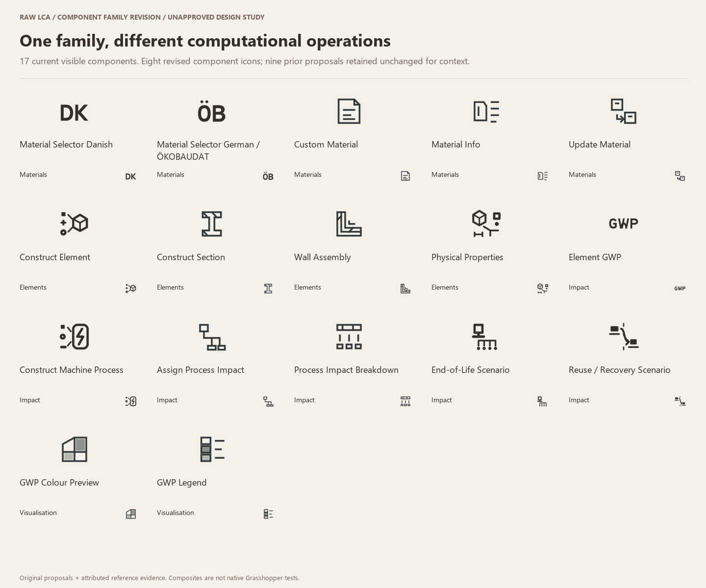
Full rationale notebook · Actual native Grasshopper captures
Historical comparison; not the implemented recommendation.
Two open custom letters use strong stems, rounded D counter and decisive K junction. Country cue identifies the Danish selector; no border.
Trade-off: DK is readable at 24 px and follows the requested identity. It does not name BR18/Table 7; the component label and tooltip must do that.
Official RAW R/A bowls and stem ratio; LB Import EPW abbreviation.Smaller DK sits above a single drafting datum, referencing a catalogue/table baseline without enclosing the letters.
Trade-off: More architectural notation, but reduced letter size and a nonessential line weaken recognition at 16 px. No enclosing three-line register.
Previous S2 baseline explored separately from its BR18 text.Historical comparison; not the implemented recommendation.
Open rounded Ö and two-bowl B; large separated umlaut dots are retained as essential source lettering.
Trade-off: Recognisable pair at 24 px. ÖB is a study abbreviation, not the official brand name; source title must spell ÖKOBAUDAT. Dots are the first risk at 16 px.
Original RAW geometric R; user-selected ÖB; LB EPW lettering.Smaller source letters with one open baseline, no enclosing sides.
Trade-off: Datum ties to architectural drawing but takes vertical space from umlaut and bowls. Prefer the open larger letters.
Prior S2 baseline; official source name preserved in label.Historical comparison; not the implemented recommendation.
Three distinct input tokens converge toward a single volumetric analytical object: material, geometry and dimensional information. Tokens are schema cues, not a claim that every mode has three mandatory inputs.
Trade-off: Direction is readable, but tiny connectors become secondary at 16 px. Prism is an analytical element symbol, not a restriction to solid geometry.
HB Room construction vs deconstruction; actual RAW constructor contract.Separated geometric fragments align into one potential element. Gaps express construction before closure.
Trade-off: Strong silhouette, but looks like assembly of physical pieces and can be confused with Wall Assembly. Less faithful to information inputs.
User assembly brief; HB aggregate/object distinction.Historical comparison; not the implemented recommendation.
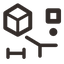
One intact block branches into a dimension, a plane and a mass-like filled mark. These represent available geometry/quantity/mass outputs, not actual pieces of the material.
Trade-off: Read-only extraction is clear at 24 px; at 16 px it is a block with outgoing measures, not a readable list of all eight outputs.
HB Geometry Properties measurement; HB Deconstruct Object direction; current outputs.A whole square specimen fans out into a dimension bracket, area tile and round mass marker. The branching operation dominates the source shape.
Trade-off: Fewer source details improve 16 px. It could describe any attribute inspector; the volumetric source in A distinguishes element properties from material metadata.
User decomposition direction; actual outputs, no edit pencil.Historical comparison; not the implemented recommendation.
One continuous horizontal abbreviation, custom open G and P counters with a simplified flowing W. GWP stays fixed across module scopes.
Trade-off: At 24 px all three glyphs survive. At 16 px W detail softens; this is acceptable only with palette labels/tooltips, not as a lone tiny brand mark.
RAW asymmetric W and geometric R; LB EPW/Area Normalize lettering.GW above a centred P creates a taller typographic emblem and larger individual glyphs.
Trade-off: More legible glyphs at 16 px, but breaks the familiar GWP reading order and resembles initials rather than the indicator. Rejected despite size advantage.
RAW-derived glyphs; abbreviation reading order is the functional constraint.Historical comparison; not the implemented recommendation.
Different input tokens converge into a rounded process-event record with an energy trace. It constructs evaluated energy/process data, not a CNC tool or robot. Direction matches Construct Element; the record and energy stroke distinguish the output.
Trade-off: A process record is less literally machine-like than General Machine, deliberately separating data construction from mode identity. The energy trace covers the current electricity evaluation but does not imply all fabrication burdens are known.
Actual evaluated-event contract; user data-assembly feedback; LB abbreviation/operation distinctions.Machine-bed fragments join a clock, representing construction of a timed process definition.
Trade-off: Recognisable time-driven machine, but measured-energy route need not supply time. Too specific to one method to be the stable constructor icon.
Machine power/time route; contrast with measured-energy precedence.Historical comparison; not the implemented recommendation.
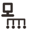
Element reaches a terminal bar; four separated endpoints indicate C1–C4 factor slots. The fan-out expresses scenario coverage after current use, not simulated mass routes.
Trade-off: Four endpoints are still distinct at 24 px; at 16 px they read as a terminal family. Avoids equating C with recycling or claiming complete C.
Actual four optional factor inputs and missing-module rules; lifecycle boundary research.A boundary stops the current element; two lower ends suggest treatment and disposal options without a recycling loop.
Trade-off: Semantically direct end marker; two paths could falsely suggest a two-route calculator rather than C1–C4 evidence. Keep as an illustrative alternative only.
End-of-current-use metaphor; C-stage treatment/disposal distinction.Historical comparison; not the implemented recommendation.
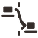
A material piece leaves one support, crosses a broken system boundary and appears on a second support. It suggests an evidenced continuation beyond current use.
Trade-off: One-way transfer distinguishes D from terminal C. Matching pieces cue reuse, but D also includes recovery/recycling credits; it does not promise the same physical item always survives.
Actual D assignment; user continuation request; no benefit colour or tick.An open, one-way curve carries a solid used piece toward an outlined future use, across a boundary line.
Trade-off: Clear continuation but closer to a familiar circularity arrow; could imply automatic closed-loop benefit. A avoids that misleading reading.
User lifecycle continuation; D credit evidence, not recycling logo.Historical comparison; not the implemented recommendation.
Single supporting frame, operating head and work-bed make an immediately recognisable generic machine. Rounded structural corner and filled head improve silhouette.
Trade-off: General operation cue, not a specific CNC claim. More literal than the rejected working gap. Shares tool/bed grammar with specialist modes.
Existing native general machine icon and actual generic power/time/energy inputs.A compact cabinet with status dial and operating bay communicates a machine asset/definition.
Trade-off: Recognisable industrial object but generic equipment rather than material transformation. More IT/appliance-like than A.
User request for recognisable General Machine; no inferred toolpath simulation.
Historical comparison; not the implemented recommendation.
Authored specification
Trade-off: Unchanged and unapproved: included for family consistency, outside the criticised-icon revision scope.
Existing RAW proposal preserved; current functionality audited only.
Historical comparison; not the implemented recommendation.
Specimen + readings
Trade-off: Unchanged and unapproved: included for family consistency, outside the criticised-icon revision scope.
Existing RAW proposal preserved; current functionality audited only.
Historical comparison; not the implemented recommendation.
Parent → derived specimen
Trade-off: Unchanged and unapproved: included for family consistency, outside the criticised-icon revision scope.
Existing RAW proposal preserved; current functionality audited only.Historical comparison; not the implemented recommendation.

Cut profile
Trade-off: Unchanged and unapproved: included for family consistency, outside the criticised-icon revision scope.
Existing RAW proposal preserved; current functionality audited only.Historical comparison; not the implemented recommendation.

Continuous layered corner
Trade-off: Unchanged and unapproved: included for family consistency, outside the criticised-icon revision scope.
Existing RAW proposal preserved; current functionality audited only.Historical comparison; not the implemented recommendation.

Allocated connection
Trade-off: Unchanged and unapproved: included for family consistency, outside the criticised-icon revision scope.
Existing RAW proposal preserved; current functionality audited only.
Historical comparison; not the implemented recommendation.
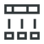
Separated contribution ledger
Trade-off: Unchanged and unapproved: included for family consistency, outside the criticised-icon revision scope.
Existing RAW proposal preserved; current functionality audited only.Historical comparison; not the implemented recommendation.

Mapped facade
Trade-off: Unchanged and unapproved: included for family consistency, outside the criticised-icon revision scope.
Existing RAW proposal preserved; current functionality audited only.
Historical comparison; not the implemented recommendation.
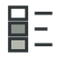
Calibrated swatches
Trade-off: Unchanged and unapproved: included for family consistency, outside the criticised-icon revision scope.
Existing RAW proposal preserved; current functionality audited only.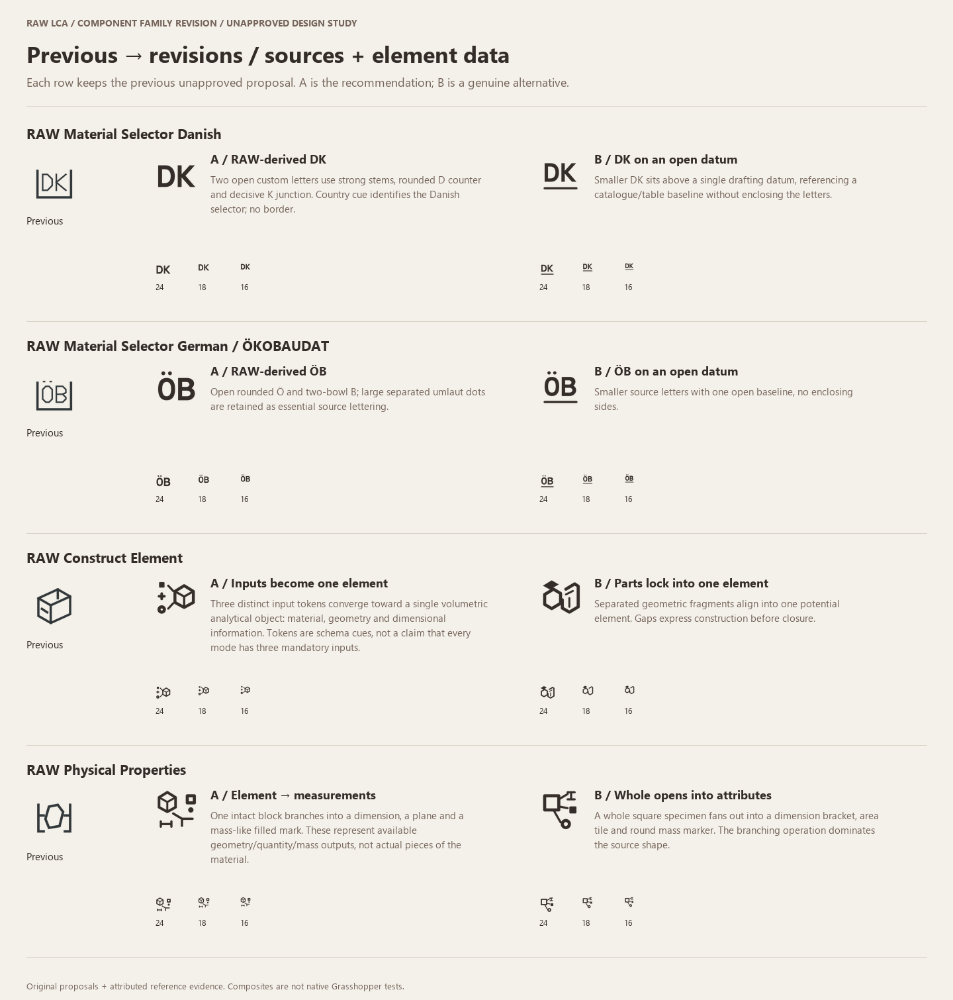
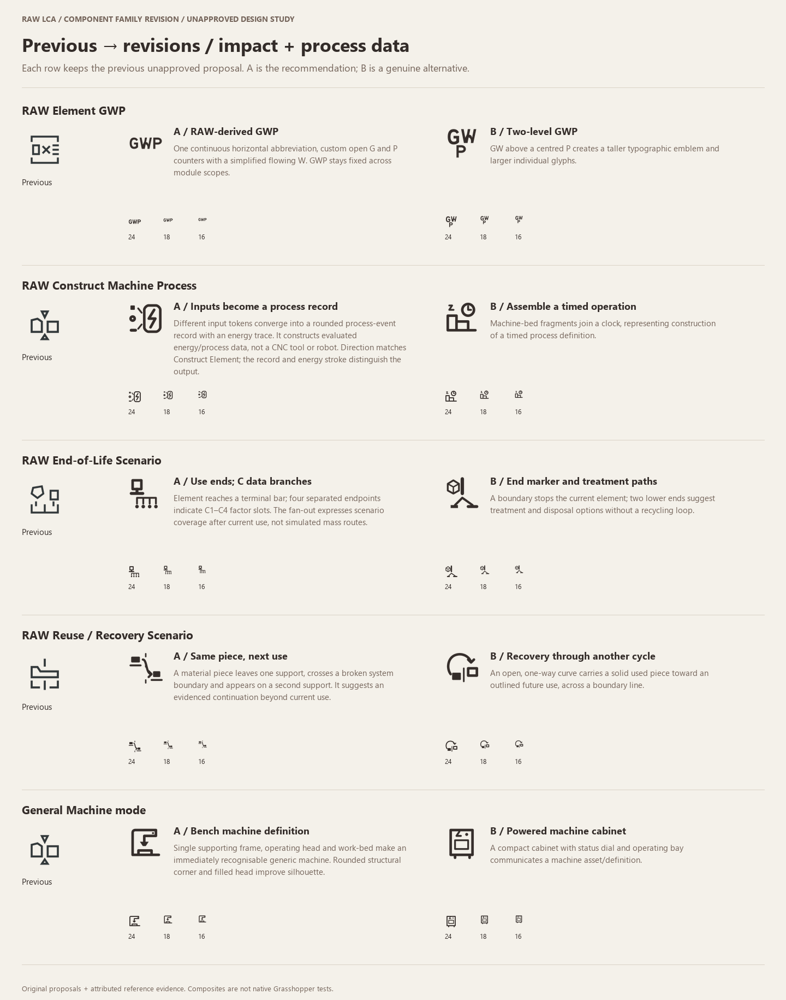
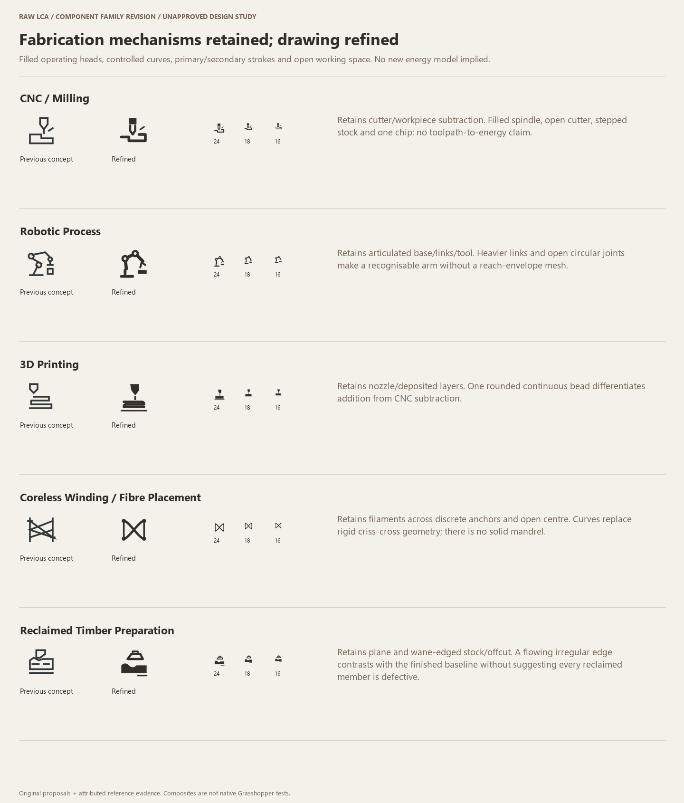
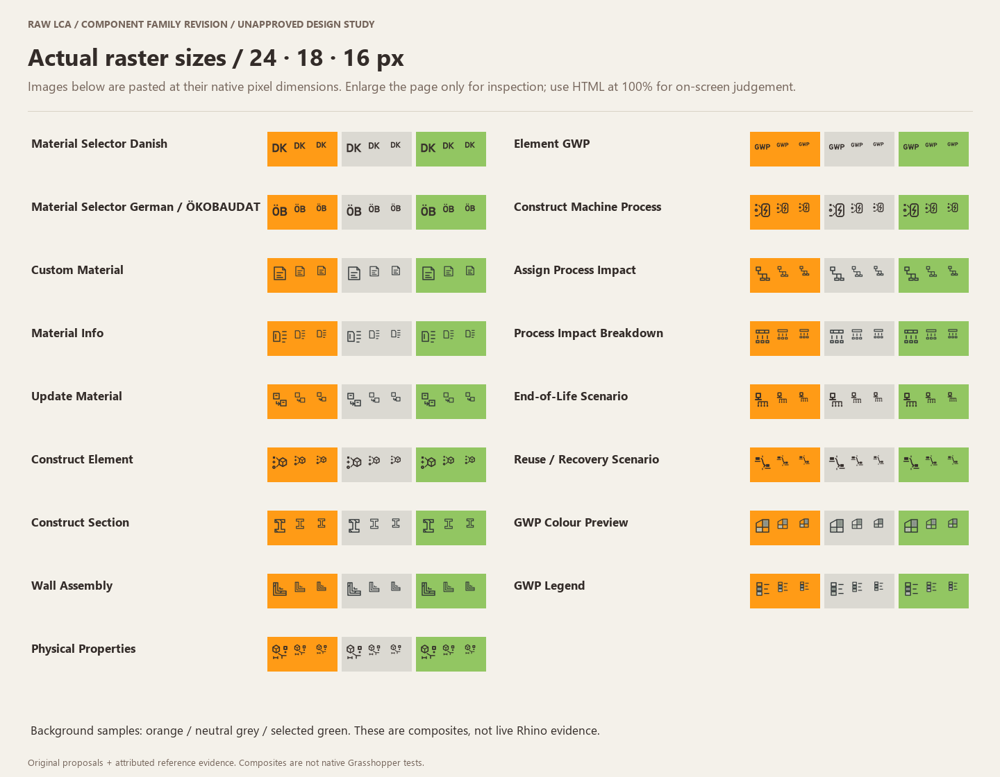
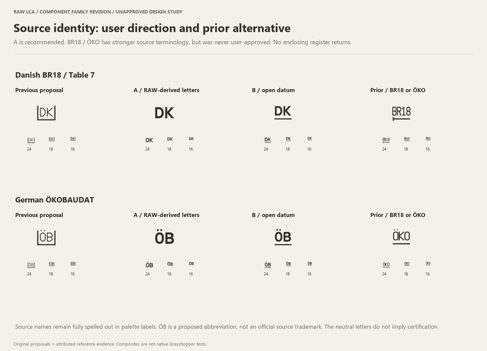
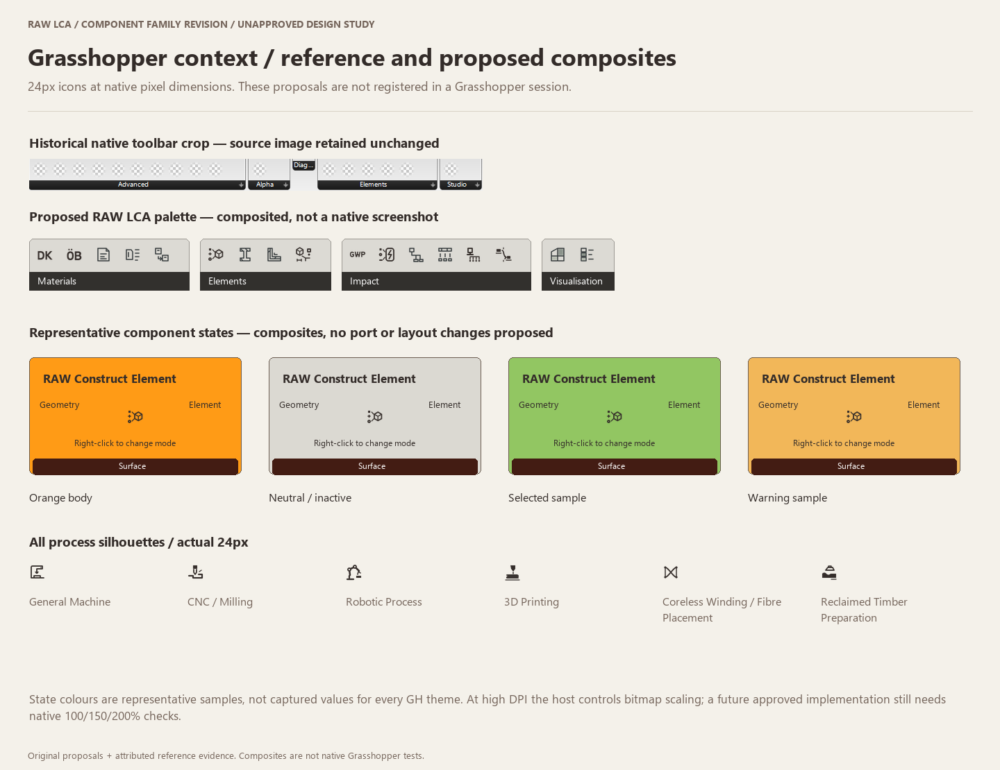